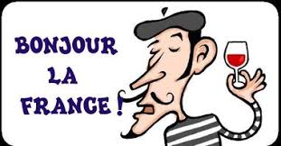

About Us
French club is a dynamic club that bases its activities on our mission statement: French club promotes the French language and Francophone culture through social and service activities, as well as fund-raising for club, school and community needs. Some social activities involve meals at French restaurants and La Maison Française on the West High campus,French movie night, Cheese-tasting, and a field trip to learn about Iowa’s French influences. We fundraise to offset the cost of some of our activities by selling Fannie May chocolate bars. We commit to giving personal time to these activities. All students enrolled in French are welcome. Come check us out! Bienvenue!
French Club is also great oppurtunity to meet new people and make new freinds with people of similar intetrests.
Check out our Schedule Page to find out what time our club meetings are!